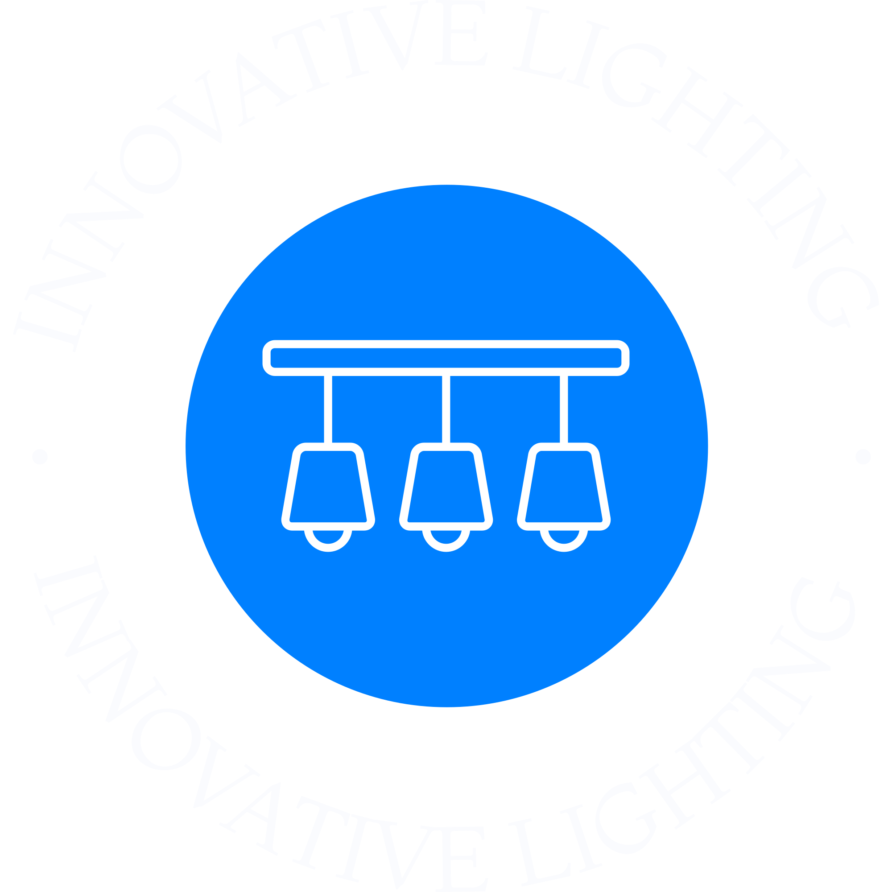

Our Story
Founded in Canada in 1850, Innovative Lighting is a bespoke tradition of
designing and manufacturing the most breathtaking crystal chandeliers
spanning six generations.
The Innovative Lighting adorns famous residences around the world from
Queen Elizabeth Palace to the White House. From traditional to modern
elegance, our ancestral intimacy with crafting heirloom chandeliers
makes Innovative Lighting the world leader in crystal luminaires.
Everything You Need to Know About Our Chandeliers
What kind of chandeliers do you sell?
We sell a wide variety of chandeliers in different styles, sizes, and materials to suit different preferences
and needs. Our chandeliers range from classic and traditional designs to modern and contemporary styles.
Are your chandeliers made of high-quality materials?
Yes, all of our chandeliers are made of high-quality materials, such as crystal, glass, metal, and more. We
source our materials from reputable suppliers to ensure that our chandeliers are not only beautiful, but also
durable and long-lasting.
Do you offer installation services for your chandeliers?
While we don't offer installation services ourselves, we can recommend professional installers in your area who
can help you install your chandelier safely and properly. It's important to hire a professional electrician to
install your chandelier to ensure that it's installed correctly and meets safety standards.
How do I clean and maintain my chandelier?
To clean and maintain your chandelier, we recommend using a soft, dry cloth to wipe down the surface of the
chandelier regularly to remove dust and debris. For more thorough cleaning, you can use a mixture of water and
mild soap to gently clean the chandelier. Avoid using abrasive cleaners or rough materials that can scratch or
damage the surface of the chandelier.
Do you offer any warranty or guarantee on your chandeliers?
Yes, we offer a warranty or guarantee on all of our chandeliers. The specific terms and conditions of the
warranty or
guarantee may vary depending on the product, but we stand behind the quality of our products and are committed
to
ensuring our customers are satisfied with their purchase.